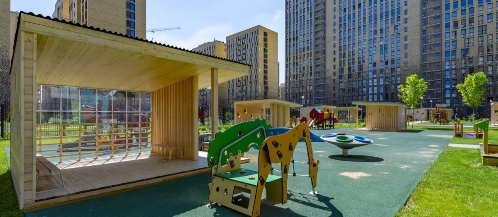

Частная или государственная школа: что лучше для вашего ребёнка

 Статью написал педагог ONE!Тихонов Андрей Олеговичучитель истории и обществознания24 года практики
Статью написал педагог ONE!Тихонов Андрей Олеговичучитель истории и обществознания24 года практики
Когда семья выбирает школу для будущего первоклассника, встаёт трудный вопрос: частная или государственная. Варианты различаются подходом к обучению и возможностями для ребёнка. Государственная школа даёт бесплатное обучение, строгое расписание и стандартную программу. Частная делает ставку на внимание к каждому ученику, современные методы и выбор кружков. Ниже разбираем плюсы и минусы обеих честно, с таблицей, и помогаем решить, что подойдёт именно вашей семье.

- При выборе важно учитывать приоритеты семьи, готовность вкладываться в образование и особенности ребёнка. Смотреть нужно не только на уровень обучения, но и на атмосферу и квалификацию педагогов.
- Государственная школа выигрывает по цене, близости к дому и опыту большого коллектива. Частная по размеру классов, программе, полному дню, среде и безопасности.
- Если бюджет позволяет, частная школа даёт больше возможностей. Если нет, сильная государственная школа рядом с домом это достойный выбор. В обоих случаях решает конкретная школа и конкретный учитель.
01Государственная школа: плюсы и минусы
Муниципальная школа это традиционный вариант, который выбирает большинство родителей. У неё есть особенности, преимущества и ограничения, о которых стоит знать до решения. Это самый подходящий вариант для семей с ограниченным бюджетом. Здесь формируется базовая академическая подготовка, дети учатся работать в коллективе и развивают социальные навыки. При этом ресурсы, количество кружков и индивидуальный подход могут быть ограничены.
Преимущества государственной школы
Главный аргумент. Образование доступно для всех, независимо от финансовых возможностей семьи. Это особенно важно для семей, которые хотят дать детям качественное образование без значительных затрат.
Учит взаимодействовать с разными людьми, находить общий язык и самостоятельно решать конфликты. Эти навыки пригодятся не только в учёбе, но и во взрослой жизни.
Распределение по месту жительства даёт удобство и безопасность: ребёнок может сам добираться на занятия. Муниципальные школы есть в каждом районе города.
Государственные учебные программы дают стабильное качество и системный подход, дети получают прочные знания по всем предметам.
Помимо основного обучения многие государственные школы предлагают секции, кружки, спортивные и творческие мероприятия.
Бюджетное обучение прививает детям дисциплину и умение организовывать время. Ученики осваивают взаимодействие в большом коллективе, знакомятся со сверстниками и участвуют в школьных мероприятиях. Такой формат часто оказывается оптимальным выбором: доступное обучение, стабильная система знаний и поддержка в раскрытии интересов.
Минусы государственной школы
Педагогу сложно уделить каждому ученику достаточно времени. Урока часто не хватает, чтобы все усвоили материал. Дополнительные занятия проводятся редко, поэтому семьи прибегают к репетиторам, если ребёнок отстаёт.
Ограниченное финансирование не позволяет закупать качественные продукты. Особенно это касается детей, оставшихся на продлёнке.
Учителя не всегда проявляют вежливость и терпение.
Делают процесс обучения скучным, что отражается на знаниях и успеваемости.
В государственных школах учатся дети из разных социальных слоёв, включая семьи с проблемами в воспитании. Иногда это плохо влияет на коллектив.
Педагоги не всегда контролируют отношения в классе, что может приводить к случаям травли и унижения детей.
Многие школы находятся в старых зданиях с устаревшим оборудованием и недостаточной инфраструктурой.
Посещение секций обычно требует отдельной оплаты и времени вне основной школы.
Несмотря на бесплатное обучение, часто есть сборы на ремонт, принтер, поездки. Даже учебники родители нередко покупают сами.
В целом минусы государственной школы связаны с перегруженностью классов, ограниченным финансированием и консервативными подходами. Родителям стоит учитывать это, чтобы ребёнок получил лучшие условия для учёбы и развития.

02Частная школа: плюсы и минусы
Школы с платным обучением отличаются вниманием к каждому ребёнку и расширенными возможностями для роста. Здесь применяют современные методики, не упускают творческое и спортивное развитие, предлагают много кружков и секций. Как и у любой школы, у частной есть свои плюсы и минусы.
Преимущества частной школы
Обучение строится по той же образовательной программе, что и в государственной школе, но у частных школ есть ряд преимуществ: индивидуальный подход, современное оборудование, выбор кружков, внимание к творческому и личностному развитию. Разберём по пунктам.
Программа может включать предметы, которых нет в государственной школе, и больше часов по основным дисциплинам. Многие частные школы дают углублённое изучение иностранных языков, математики или других предметов. Некоторые имеют международную аккредитацию, которая даёт преимущество при поступлении в зарубежные университеты. В ряде школ обучение с первого класса ведётся на иностранном языке, и полученные знания позволяют продолжить образование за границей.
Родители могут выбрать дневную форму, полупансион или полный пансион. При полупансионе школьник остаётся в школе до 18:00-19:00, что удобно для семей, где взрослые работают допоздна: трёхразовое питание, отдых, домашние задания, прогулки, кружки. Полный пансион это пребывание на пятидневке с круглосуточным присмотром и организованным учебным и досуговым временем.
В классе обычно не больше двух десятков человек. Это позволяет педагогу уделять внимание каждому, ребёнок лучше усваивает материал, чувствует себя уверенно и активно участвует в уроках. К каждому ученику подход с учётом характера, психологических особенностей и способностей: учитель при необходимости объясняет тему повторно, пока ребёнок не усвоит. В некоторых школах программа разрабатывается под потребности конкретного ученика.
В частной школе преимущественно учатся дети из благополучных семей. Конфликты между учениками возможны, как в любом коллективе, но случаи травли строго пресекаются, а педагоги внимательно следят за отношениями в классе. Это создаёт безопасную и дружелюбную атмосферу.
Классы оборудованы качественной мебелью и техникой, в спортивных залах есть всё для хореографии, гимнастики и других видов активности, во многих школах предусмотрены бассейны. Такое оснащение делает обучение эффективнее и интереснее.
Вместо привычных контрольных ученики могут выполнять проекты и защищать их перед классом. Это развивает критическое мышление, умение работать самостоятельно и презентовать результат. Дети не заучивают материал, а усваивают и применяют знания на практике.
Школа уделяет внимание качеству преподавательского состава, потому что репутация напрямую зависит от профессионализма учителей. В коллективе работают специалисты высокой категории, многие с учёными степенями, и они регулярно повышают квалификацию.
Территория закрыта, под постоянной охраной и видеонаблюдением, что сводит к минимуму риск проникновения посторонних.
В столовой дети получают свежие продукты, приготовленные с соблюдением норм. Рацион составлен с учётом сбалансированного содержания витаминов и минералов, чтобы ученики были здоровы и активны весь день.
Широкий выбор кружков, секций и факультативов прямо в школе, что особенно удобно родителям с плотным графиком. Дети развивают творческие, спортивные и интеллектуальные способности и углубляют знания по основным предметам. Стоимость дополнительных занятий обычно уже включена в оплату обучения.
Оплата охватывает базовый пакет услуг и полностью обеспечивает ученика всем необходимым. Платить за ремонт кабинетов, школьные принадлежности и другие расходы не нужно, семья заранее планирует бюджет.
Минусы частной школы
У частных школ тоже есть слабые стороны, которые важно учитывать.
Обучение требует серьёзных вложений, причём размер оплаты часто пересматривается ежегодно. Бюджет нужно планировать заранее.
Частные школы есть не во всех районах, поэтому нужно продумать безопасный и удобный способ добираться.
Мест ограниченное количество, поэтому есть отбор. Дети могут испытывать напряжение, проходя тесты при поступлении.
Ребёнок чаще всего учится с детьми из благополучных семей, что ограничивает социальное разнообразие и опыт общения с разными людьми.
Хотя базовое обучение и многие занятия включены в стоимость, иногда родители оплачивают факультативы, кружки или секции сверх программы.
03Сравнительная таблица
| Критерий | Муниципальная школа | Частная школа |
|---|---|---|
| Стоимость обучения | Бесплатно, но возможны сборы на нужды школы | Платное обучение |
| Размер классов | Переполненные классы затрудняют индивидуальную работу | Небольшие классы позволяют уделять внимание каждому |
| Подход к обучению | Общая программа, ограниченное персональное сопровождение | Персонализированное обучение с учётом способностей ребёнка |
| Учебные программы | Государственные стандарты | Расширенные знания, дополнительные дисциплины |
| Методы обучения | Преимущественно традиционные формы, контрольные и тесты | Проекты, творческие и командные задания |
| Материальная база | Не всегда современное оборудование и инфраструктура | Оснащённые классы, спортзалы, специализированные помещения |
| Кружки и секции | Не всегда есть при школе, часто оплачиваются отдельно | Доступны при школе и обычно включены в стоимость |
| Безопасность | Стандартные меры контроля на территории | Закрытая территория, охрана и видеонаблюдение |
04Как выбрать
Этот вопрос волнует многих родителей будущих первоклассников. Помимо качества образования, важно учитывать комфортные условия, индивидуальный подход и возможности для всестороннего развития. Частная школа выигрывает за счёт небольших классов, современного оборудования, выбора дополнительных занятий и методов обучения. Государственная доступнее по стоимости, расположена ближе к дому и даёт опыт общения в большом социально-разнообразном коллективе.
Если бюджет позволяет, частная школа даёт ребёнку больше: качественное образование, нужные навыки и больше возможностей для поступления в хороший вуз. Такой старт закладывает надёжный фундамент для будущего. Если бюджет ограничен, ищите сильную государственную школу рядом с домом и добирайте английский и профильные предметы отдельно.
Три правила работают для обоих вариантов:
- Смотрите результаты школы за три года. Один сильный выпуск может быть случайностью.
- Приходите на экскурсию в учебное время. Коридор на перемене и урок через открытую дверь скажут больше презентации.
- Проверяйте конкретного учителя. Ребёнок попадёт не «в школу», а к одному педагогу начальных классов. Поговорите с родителями из его класса.
В чём разница между школами по размеру класса, английскому, полному дню и контролю родителей, разобрали отдельно в статье «Частная или государственная школа: в чём разница на самом деле». Что спрашивать на экскурсии, в чек-листе по выбору частной школы. Из чего складывается цена, в статье «Сколько стоит частная школа в Москве».
05Частые вопросы
Да, переход возможен в любом классе при наличии свободных мест. Ребёнку предлагают пройти собеседование и тестирование, чтобы определить уровень знаний и подобрать программу. В ONE! первые недели за новым учеником закрепляют куратора.
Углублённое изучение отдельных предметов, подготовку к экзаменам и академические навыки. В некоторых школах действуют международные программы, которые расширяют возможности поступления в зарубежные университеты. Обучение в частной школе помогает ученикам ответственнее подойти к выбору профессии.
Подготовка включает повторение основных предметов, развитие самостоятельности и психологическую адаптацию к новым требованиям. Полезно заранее познакомиться со школой, посетить дни открытых дверей и обсудить с ребёнком формат обучения. При необходимости можно пройти подготовительные курсы или консультации с педагогами.
Дают, если у школы есть государственная аккредитация. Проверьте документ на сайте школы до подписания договора.
06Что дальше
Приходите на экскурсию в учебный день. Покажем урок в классе на двенадцать человек, познакомим с педагогом начальной школы и ответим на вопросы по стоимости и переводу. Записаться можно на странице поступления или по телефону +7 (495) 152-22-21.